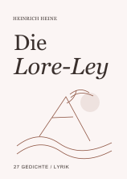
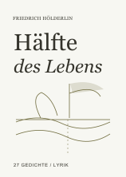
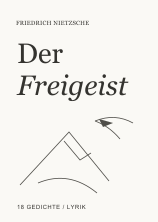
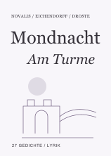
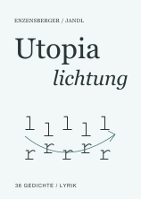
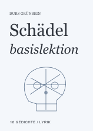

← 十五册主页新六册 · 配色预览
参考Anthropic官网公开品牌色。陶土橙、石墨灰采用原色；其余四色为同风格合成。已有九册的颜色保留。

海涅诗选
陶土橙 · 官网原色
打开语音读本 →按钮 #D97757 ／ 书页 #915947
荷尔德林诗选
苔金 · 基于官网色系合成；不是官网原色
打开语音读本 →按钮 #A39D58 ／ 书页 #726E41
尼采诗选
石墨灰 · 官网原色
打开语音读本 →按钮 #5E5D59 ／ 书页 #4F4E49
诺瓦利斯／艾兴多夫／德罗斯特诗选
石南紫 · 基于官网色系合成；不是官网原色
打开语音读本 →按钮 #9B88AA ／ 书页 #6E5C7D
恩岑斯贝格尔／杨德尔诗选
水蓝绿 · 基于官网色系合成；不是官网原色
打开语音读本 →按钮 #559C9D ／ 书页 #396C6D
格林拜恩诗选
雾钢蓝 · 基于官网色系合成；不是官网原色
打开语音读本 →按钮 #778DA8 ／ 书页 #49617E色值与来源记录